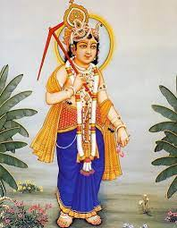
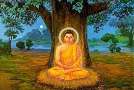
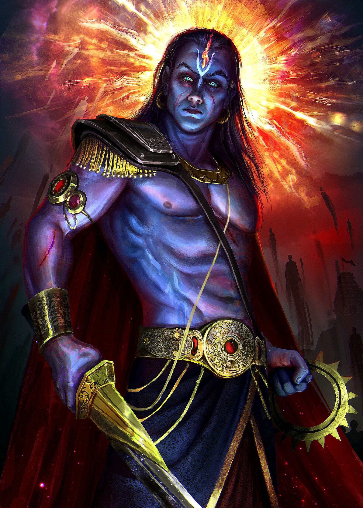

The story of Matsy a Avatar is somewhat similar to that of Noah in the Bible. According to Matsya Purana, Lord Vishnu incarnated as half-fish and half-human and guided the king Satyavrat (Manu) to save himself, seeds of the plants, herbs, and mobile living creatures on the earth at the time of the great flood.

Kurma, the second avatar of Vishnu, is depicted in the water holding up Mount Mandāra, chosen as a churning rod upon which Vishnu himself is seated. The snake Vāsuki, coiled around it, serves as a rope which is being pulled on the left by the gods Brahmā, Vishnu and Shiva, and on the right by three demons.

Hindu mythology. Varaha. Varaha, (Sanskrit: “Boar”) third of the 10 incarnations (avatars) of the Hindu god Vishnu. When a demon named Hiranyaksha dragged the earth to the bottom of the sea, Vishnu took the form of a boar in order to rescue it. They fought for a thousand years.

Hiranyakashipu had believed that the boon granted by Brahma would make his immortal, but Lord Vishnu outsmarted him by appearing as Narasimha. Thus, Vishnu saved Prahlad and restored peace by appearing as Narasimha When the pious Bali asked what gift the holy man desired, Vamana requested only as much land as he could cover in three steps.

Through intensive religious rituals, the demon king Bali conquered the gods. The god Vishnu came to earth as Vamana, his fifth avatar, to defeat him. Vamana appeared as a dwarflike BrahminWhen the pious Bali asked what gift the holy man desired, Vamana requested only as much land as he could cover in three steps.

Parshurama was the sixth avatar of Lord Vishnu. He was born to the Brahman Sage Jamadagni and the princess Renuka, one of the Saptarishis. Though he was born in the Brahmin family, he carried Khatriya traits like aggressiveness, warfare and valour. Hence he is known as “Brahmin-Kshatriya”.

Story Behind Ram Avatar of Vishnu. Lord Rama was born to Kausalya, Kaikeyi gave birth to Bharata and to Sumitra, the twin Lakshman and Shatrughna were born. Rama was the eldest son and Bharata was the second eldest. Rama was the seventh avatar of Lord Vishnu and he incarnated in the Treta Yug to end all evil.

Vasudeva-Krishna was deified by the 5th century bce. The cowherd Krishna was probably the god of a pastoral community. The Krishna who emerged from the blending of these figures was ultimately identified with the supreme god Vishnu-Narayana and, hence, considered his avatar.
Balarama was born in the month of Sridhara during the full moon, which falls in July. Later Krishna, the 9th avatar of Vishnu, was born. Krishna was born to Devaki and Vasudeva but was brought up by Nanda Baba. He was named Rama initially but was called "Balarama," which means "strong Rama" for his superior strength.
The Buddha was integrated into Vaishnavism through its mythology in the Vaishnava Puranas, where the Buddha is adopted as the ninth avatar of Vishnu. According to the Agni Purana, Vishnu assumed this incarnation on earth due to the daityas defeating the devas in their battles.
Kalkin, also called Kalki, final avatar (incarnation) of the Hindu god Vishnu, who is yet to appear. At the end of the present Kali yuga (age), when virtue and dharma have disappeared and the world is ruled by the unjust, Kalkin will appear to destroy the wicked and to usher in a new age.